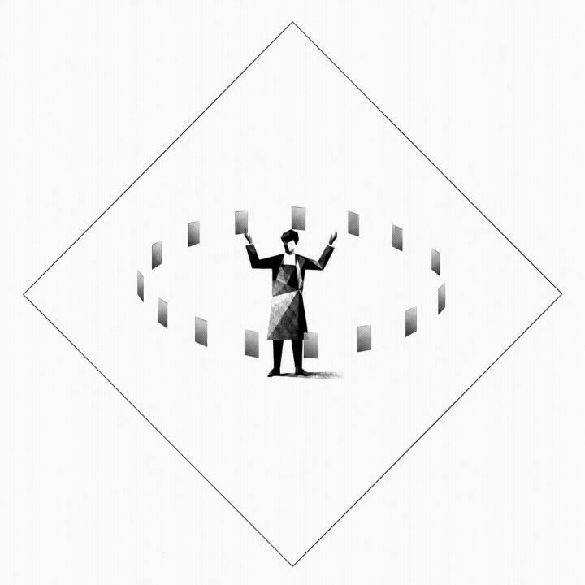

Start here
The Signal Session
A focused first read on where AI fits — and the next step worth taking.
Start with clarityPractical AI guidance for owner-led businesses ready to turn curiosity, scattered experiments, and new tools into useful work.
AI is everywhere. AI that's useful inside your business is harder to find.
Linea Lab helps you choose the right opportunities and turn promising experiments into practical workflows.
Most businesses are past "Is AI important?" — and stuck on "What do we actually do with it?" That's the moment Linea Lab is built for.

We build into your current workflow — no rebuild, no disruption.
Where AI helps. Where it doesn't.
The right tools for your work.
One idea into a real workflow.
Your team, on their actual work.
Where humans stay in the loop.

AI systems and workflow design.
Visual thinking and clarity.
Strategy, operations, and rollout.
No. We meet your team where they are, using examples from your own work.
No. We design workflows around your real work, then train people on those.
That's exactly what the Signal Session is for.
Yes — weighed against your work, budget, and privacy needs. We don't sell a platform.
Good. We start small and let confidence build on real results.
By design. We mark the steps that need a person and keep judgment with your team.
Most teams start with the Signal Session. It tells us what comes next.